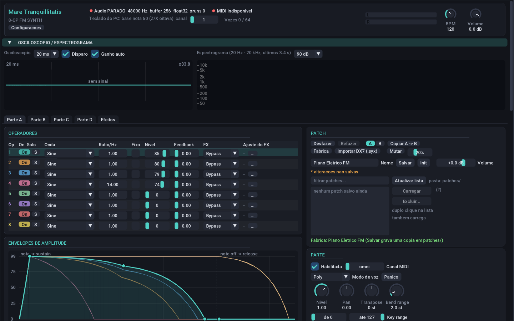
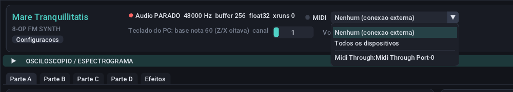
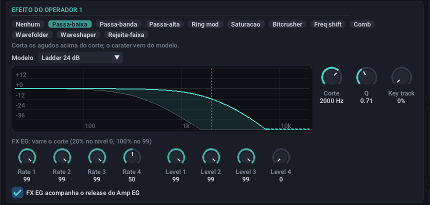
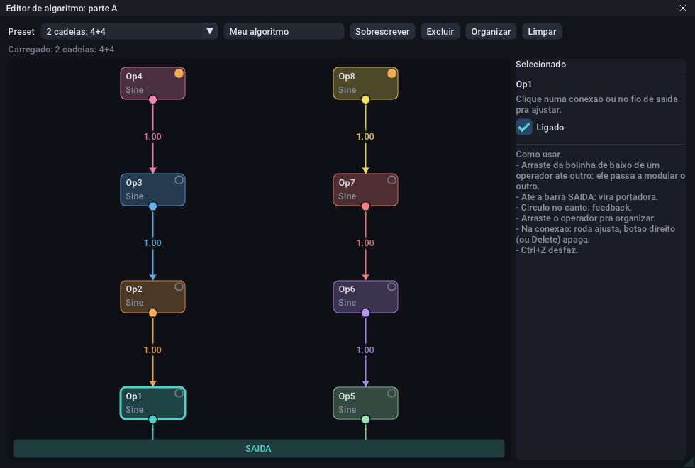
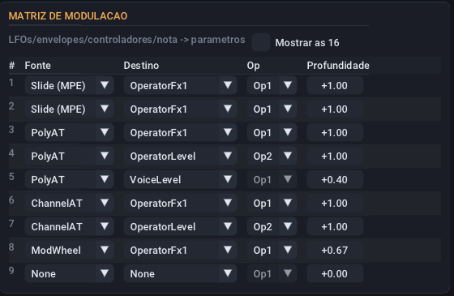
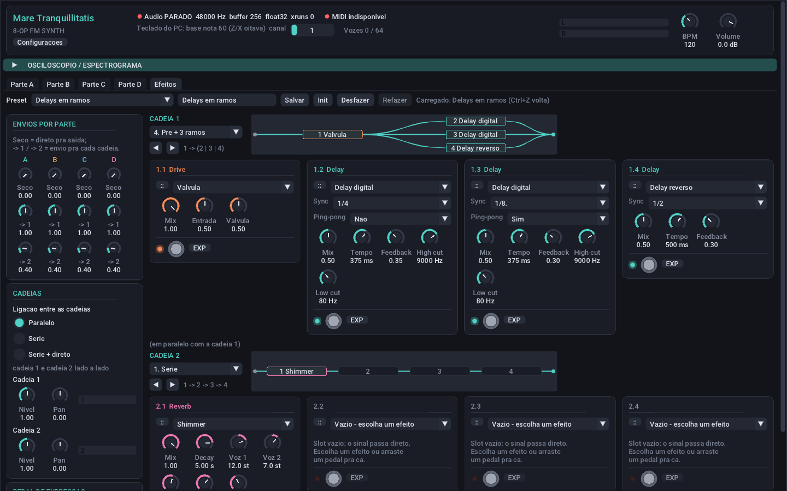

Manual do usuário
Mare Tranquillitatis
Sintetizador FM de 8 operadores para Linux, com aditiva, wavetable, 4 partes e uma pedaleira de efeitos. Este manual explica como instalar, tocar, entender a interface e criar os seus próprios sons.
01O que é
Um motor FM inspirado no Yamaha DX7, mas bem mais livre.
Cada voz tem 8 operadores ligados como você quiser: use um dos 32 algoritmos prontos ou desenhe o seu arrastando conexões. Cada operador pode tocar 14 formas de onda, incluindo aditiva de 64 parciais e wavetable, e tem o próprio efeito, como filtro, wavefolder ou waveshaper.
São até 64 vozes divididas em 4 partes independentes, como ter 4 sintetizadores juntos, cada um no seu canal MIDI. A soma das partes passa por uma pedaleira de 2 cadeias com 4 pedais cada.
O programa é distribuído sob a GNU GPL v3. Origem e licença de cada componente estão em THIRD_PARTY_NOTICES.md.
02Instalação
Instale as dependências e compile com CMake.
| Pacote | Arch / EndeavourOS | Debian / Ubuntu |
|---|---|---|
| SDL2 | sdl2-compat | libsdl2-dev |
| ALSA | alsa-lib | libasound2-dev |
| Compilador | cmake gcc | cmake g++ |
É preciso um compilador com C++20 e CMake 3.16 ou mais novo. O processador precisa ser x86-64. A interface (Dear ImGui) e os efeitos já vêm no repositório.
Na pasta do repositório:
cmake -S dx7fm -B dx7fm/build -DCMAKE_BUILD_TYPE=Release
cmake --build dx7fm/build -j$(nproc)
cd dx7fm
./build/mare_tranquillitatisOs seus patches e presets ficam em pastas relativas a onde o programa foi aberto (veja a lista). Se abrir de outro lugar, eles não aparecem nas listas.
03Primeiros minutos
Do programa aberto ao primeiro som, sem ler o resto.
- Toque uma notaPressione A no teclado do computador. Deve soar um dó. As teclas de A a ; são um piano; Z e X mudam a oitava.
- Carregue um som prontoNo card Patch, clique em Fábrica e depois em qualquer patch da lista. Dá para ir trocando enquanto toca.
- Acrescente efeitosAbra a aba Efeitos e escolha um preset no menu do topo, como Ambient shimmer ou Lead de estadio.
- Ligue o seu teclado MIDISe tiver um, escolha-o no menu MIDI, no topo da janela.
- Mude algoMexa num knob. Se não gostar, Ctrl+Z desfaz.


04Tocando
Um controlador MIDI e o teclado do computador funcionam ao mesmo tempo.
Escolher o dispositivo MIDI


Use o menu MIDI no topo da janela:
- Nenhum (conexão externa): é o padrão. O programa não conecta nada; você liga a porta por fora, como no exemplo abaixo.
- Todos os dispositivos: ouve tudo o que estiver plugado, inclusive o que entrar depois.
- Um dispositivo: ouve só esse. A escolha fica salva. Se ele for desplugado, o menu mostra (desconectado), a luz fica laranja, e ele volta sozinho quando for reconectado.
A luz ao lado do menu acende quando chega MIDI (o clock não conta). Para conectar por fora:
aconnect -l
aconnect 'Seu controlador' 'Mare Tranquillitatis'O que o MIDI controla
| Mensagem | Efeito |
|---|---|
| Notas, velocity | Tocam nas partes habilitadas daquele canal, ou em omni |
| Pitch bend | Afina a parte, na faixa de Bend range |
| CC1 | Mod wheel (fonte da matriz) |
| CC2, CC4, CC11 | Sopro, Pé e Expressão (fontes da matriz) |
| CC64, CC66 | Sustain e sostenuto; o CC64 também é fonte da matriz |
| CC74 | Slide por nota, com MPE ligado |
| CC120, CC123, CC121 | Calar o som, soltar as notas, zerar os controladores |
| Aftertouch de canal e polifônico | Fontes ChannelAT e PolyAT da matriz |
| Clock, Start, Continue, Stop | Tempo e início do compasso (BPM) |
Aftertouch e os CCs só fazem efeito se houver uma rota para eles na matriz de modulação. Um CC aprendido no MIDI learn tem prioridade e deixa de ter a função da tabela.
MPE
Controladores MPE (Seaboard, LinnStrument, Osmose, Push 3…) mandam cada nota num canal próprio, com bend, pressão e slide só dela. Ligue em Configurações → MPE (zona inferior), ou deixe o controlador ligar sozinho, como a maioria faz ao conectar. O canal 1 é o mestre, e as notas chegam nos canais 2 a 16 e tocam nas partes do canal 1 ou em omni.
- Bend por nota: vai direto na afinação da nota; a faixa padrão é de 48 semitons.
- Pressão: chega como fonte PolyAT.
- Slide (CC74): chega como fonte Slide (MPE).
Só a zona inferior é suportada. O patch de fábrica Expressivo MPE já vem com as rotas prontas.
Teclado do computador
O mapeamento segue a posição física das teclas, então funciona em qualquer layout.
Z desce e X sobe uma oitava. O teclado toca as partes habilitadas em omni ou no canal escolhido no topo da janela, qualquer que seja a aba aberta. Toda nota sai com velocity 100 e sem aftertouch; para dinâmica, use um controlador.
05A interface
Um topo fixo, um visualizador e 5 abas.
Topo da janela
| Item | O que mostra ou faz |
|---|---|
| Configurações | Oversampling, clock, MPE e MIDI learn (detalhes) |
| Audio | Estado, taxa de amostragem, buffer, formato e xruns (falhas de áudio) |
| MIDI | Dispositivo de entrada e luz de atividade |
| Teclado do PC | Nota base e canal |
| Vozes | Quantas das 64 vozes estão soando |
| L / R | Medidores de pico: verde até −12 dB, amarelo até −3 dB, vermelho acima |
| BPM | Tempo de tudo o que tem Sync (detalhes) |
| Volume | Volume geral, de −60 a +6 dB (onde ele age) |
Osciloscópio e espectrograma
Mostram a saída final. Clique no título da faixa para recolher e ganhar espaço.
- Osciloscópio: Disparo mantém a onda parada; Ganho auto amplia sinais baixos; o menu escolhe a janela de 5 a 50 ms.
- Espectrograma: as frequências dos últimos 3,4 s, com a mais recente à direita. Passe o mouse para ver frequência, nota e nível. O menu ajusta a faixa dinâmica.
Abas
Parte A a Parte D têm o som de cada parte, em cards. Efeitos tem a pedaleira. Em janelas estreitas, os cards ficam em uma coluna só.
Como usar os knobs
| Gesto | Ação |
|---|---|
| Arrastar para cima ou para baixo | Muda o valor; com Shift, ajuste fino |
| Roda do mouse | Muda o valor |
| Duplo clique | Volta ao padrão |
| Botão direito | Abre um campo para digitar |
Campos numéricos, como Ratio, se ajustam arrastando; Ctrl+clique permite digitar. Cada operador tem cor fixa em toda a interface.
06Conceitos de FM
O mínimo para entender os controles, se você nunca usou um sintetizador FM.
- Operador
- Um oscilador com envelope próprio.
- Portadora
- Operador que vai para a saída: é o que você ouve.
- Modulador
- Operador que altera a fase de outro. Você não o ouve diretamente: ouve o timbre que ele cria. Um operador pode ser as duas coisas.
- Algoritmo
- O desenho de quem modula quem.
- Ratio
- A frequência do operador em relação à nota. Ratios inteiros soam harmônicos; quebrados, como 3,5, soam metálicos, de sino.
- Nível do modulador
- Quanto mais alto, mais brilho. Por isso o envelope do modulador desenha o timbre ao longo da nota, e o da portadora, o volume.
- Feedback
- Um operador modulando a si mesmo. Pouco dá mais harmônicos; muito vira ruído. Aqui, cada operador tem o seu.
Como funciona um envelope
Os envelopes seguem o estilo do DX7: 4 rates (velocidades) e 4 levels (níveis). Ao tocar a nota, ele vai até Level 1 na velocidade Rate 1, depois a Level 2 e a Level 3, onde fica enquanto a tecla estiver presa. Ao soltar, vai a Level 4 na velocidade Rate 4. Rate alto é rápido: 99 é quase instantâneo, e valores perto de 0 levam muitos segundos.
07Tutoriais
Quatro receitas curtas, cada uma mostrando uma parte do programa.
1. Um sino, do zero
- Comece limpoNa aba Parte A, clique em Init no card Patch. Toque A: é um timbre simples, em que o Op2 modula o Op1.
- Torne o modulador inarmônicoNa tabela de operadores, na linha do Op2, ajuste Ratio para 3,5 e Nível para 90. O som fica metálico.
- Faça a portadora decairClique na linha do Op1. Nos knobs abaixo do gráfico de envelopes, ponha Rate 2, 3 e 4 em 15 e Level 2 e 3 em 0. Agora a nota morre sozinha, em uns 3 segundos.
- Faça o brilho sumir antesClique na linha do Op2 e use Rate 2, 3 e 4 em 25 e Level 2 e 3 em 0. O ataque fica metálico e a cauda, pura. Esse é o som de sino.
- SalveDigite Sino no campo Nome do card Patch e clique em Salvar.
2. Desenhe um algoritmo
- Abra o editorNo card Algoritmo, clique em Editor grafico. Com o sino do tutorial 1, aparece o Op2 sobre o Op1.
- ConecteArraste da bolinha de baixo do Op3 até o Op1. O Op3 passa a modular o Op1, e o sino ganha outra camada de brilho.
- Crie uma portadoraArraste da bolinha do Op5 até a barra SAIDA. Agora há duas portadoras.
- AjusteClique no fio do Op3 e mude a quantidade no painel da direita, ou gire a roda do mouse sobre o fio.
- Salve como presetDê um nome e clique em Salvar. Ele aparece em Meus algoritmos.
3. Controle o brilho com um knob
- Crie a rotaNo card Matriz de modulação, na primeira linha livre, escolha fonte Macro1, destino VoiceFmIn e profundidade +1,00.
- Toque e gireSegure uma nota e gire o knob Macro 1 no card Macros. A FM de toda a voz vai até o dobro.
- Ligue ao seu controladorClique em aprender, embaixo do knob, e mova um knob do seu controlador.
4. Efeitos diferentes para cada parte
- Prepare duas partesNa aba Parte B, marque Habilitada e carregue um patch de pad. Para separar os timbres, use os Key range (split).
- Crie as cadeiasNa aba Efeitos, ponha um Overdrive e um Delay digital na cadeia 1 e um Hall na cadeia 2.
- Mande cada parte para a suaEm Envios por parte, deixe A em → 1 = 1 e → 2 = 0, e B em → 1 = 0 e → 2 = 1. O preset Partes separadas já vem assim.
08Patches
Um patch é o som de uma parte, guardado num arquivo JSON legível.
| Controle | O que faz |
|---|---|
| Nome + Salvar | Grava em patches/<nome>.json; pergunta antes de substituir outro patch |
| Lista + Carregar | Carrega na parte, inclusive com duplo clique; o filtro ajuda a achar |
| Excluir… | Apaga o arquivo, com confirmação |
| Init | Volta ao patch inicial |
| Volume | Volume do patch em dB; vai junto com o som |
| Desfazer, Refazer | Ctrl+Z e Ctrl+Y; por parte, até 100 passos. Arrastar um knob é um passo só |
| A | B | Duas versões do som para comparar; Copiar A → B copia o lado atual para o outro |
| Fábrica | Os 39 patches prontos, com filtro e busca. Clicar já carrega |
| Mutar | Varia o som ao acaso, sem mudar algoritmo, ondas e volume das portadoras: 10% retoca, 50% muda bastante |
| Importar DX7 (.syx) | Bancos de 32 vozes ou vozes únicas, como os do Dexed. Os 6 operadores viram Op1 a Op6; a conversão é aproximada |
O aviso * alterações não salvas aparece quando o som mudou. Com alterações pendentes, carregar outro patch ou clicar em Init pede confirmação.
Guarda: operadores (com On/Off), algoritmos, envelopes, LFOs, matriz de modulação, macros, arpejador, modo de voz, glide, unison, faixa de bend, transpose e nome.
Não guarda: canal MIDI, faixas de tecla e velocity, vozes reservadas, nível, pan e afinação da parte; solo; e os efeitos da pedaleira. Assim, trocar de patch não desmonta um split nem muda os efeitos.
09Partes
Quatro sons independentes. Só a Parte A vem ligada.
| Controle | O que faz |
|---|---|
| Habilitada | Liga a parte |
| Canal MIDI | Omni (recebe todos) ou de 1 a 16 |
| Modo de voz | Poly, Mono ou Unison (várias vozes por nota, com detune e espalhamento). Mono e Unison mostram os controles de glide |
| Panico | Solta todas as notas da parte |
| Nível, Pan | Mix da parte |
| Transpose, Bend range | Em semitons |
| Key range | Faixa de notas que a parte toca |
| Vozes reservadas | Vozes garantidas para esta parte, do total de 64 |
| Afinação | Escala Scala (detalhes) |
Camadas: habilite duas partes no mesmo canal. Split: habilite duas partes com Key range diferentes, por exemplo de 0 até 59 e de 60 até 127.
Microafinação
Na linha Afinação, carregue uma escala Scala (.scl) e, se quiser, um mapa de teclado (.kbm). Sem .kbm, cada tecla é um grau da escala a partir do C4, e a nota 69 fica na frequência do campo A4. 12-TET volta ao temperamento igual. O programa lembra os arquivos ao reabrir.
Onde cada volume age
A ordem do sinal explica o comportamento dos efeitos:
voz → Volume do patch → Nível e Pan da parte → Seco / → 1 / → 2 → Efeitos → Volume geral → limitadorO Volume geral vem depois dos efeitos, então não muda quanto um drive satura nem quando o compressor age. Para "bater mais forte" nos efeitos, suba o Nível da parte ou os envios.
10Operadores
A tabela mostra os 8; clicar numa linha abre o resto no card Operador.
| Coluna | O que faz |
|---|---|
| On / Off | Desligado, o operador não soa nem modula e não gasta CPU. Os ajustes ficam guardados, e o estado vai no patch |
| S (solo) | Ouve só este operador, com os moduladores dele, no nível real; um modulador de nível baixo soa baixo. Não vai no patch. Enquanto ativo, um aviso laranja aparece abaixo da tabela, com o botão Tirar solo |
| Onda | Uma das 14 formas de onda |
| Ratio/Hz, Fixo | Razão com a nota, ou frequência fixa em Hz |
| Nível | De 0 a 99; cada passo vale 0,75 dB |
| Feedback | Auto-modulação |
| FX, Ajuste do FX | Efeito do operador e seu ajuste principal; … leva ao card completo |
Envelopes de amplitude
O gráfico sobrepõe os 8 envelopes, com o tempo comprimido para caber de milissegundos a vários segundos. A curva do operador selecionado tem 4 pontos arrastáveis: na vertical muda o level; na horizontal, o tempo. Com Shift, muda só o level. Na legenda, clique num chip para selecionar, use o botão direito para esconder a curva, e Só usados para ver só os operadores que chegam à saída. Os knobs abaixo fazem o mesmo com precisão.
Card Operador
| Knob | O que faz |
|---|---|
| Fine, Detune | Afinação fina, em cents |
| Phase dist | Distorce a fase da onda; mais harmônicos, como em Casio CZ |
| PEG depth | Quanto o Pitch EG afeta este operador |
| Vel sens | Quanto a velocity muda o nível |
| Rate scal | Envelopes mais rápidos em notas agudas |
| LFO pitch, LFO amp | Quanto os LFOs afetam a afinação e o volume deste operador |
| Breakpoint, Esq, Dir | Key scaling: nível em função da nota, em volta do breakpoint |
Pitch EG
Envelope de afinação da voz, com 4 rates, 4 levels e Range. O nível 50 é o centro, sem desvio. Só afeta os operadores com PEG depth acima de 0.
11Formas de onda
14 ondas, incluindo dois modos com editor próprio.
De HalfSine a LogSaw são reconstruções próprias inspiradas nas ondas AFM da Yamaha SY77/TX81Z, não cópias da ROM.
Additive
O operador vira a soma de 64 parciais, cada um com amplitude e razão de frequência próprias (de 0,01 a 128). Razões inteiras são harmônicos; fracionárias soam como sinos e tambores. O operador continua podendo modular e ser modulado.
- Pintar: clique e arraste nas barras. Botão direito desliga o parcial.
- Vistas: Amplitude, Amplitude dB e Razão. Na vista Razão, Shift encaixa em harmônicos.
- Dois espectros, A e B: o knob Morph define quanto o FX EG leva de A a B. A matriz também move o morph, pelo destino OperatorMorph.
- Presets: Seno, Serra, Quadrada, Triângulo, Órgão, Vogal, Sino e Tambor.
Parciais acima da metade da taxa de amostragem são desligados sozinhos, então não há aliasing. O custo depende do último parcial ligado: 8 parciais custam bem menos que 64.
Ressíntese (a partir de um WAV)
No editor Additive, Ressintetizar WAV… transforma um som gravado em parciais. Funciona melhor com uma nota só, sem reverb longo.
- Abra o arquivoMono ou estéreo, PCM de 8 a 32 bits ou float.
- Marque dois instantesArraste A (ataque) e B (sustain) na forma de onda.
- Ajuste, se precisarJanela FFT maior separa parciais próximos, mas borra o tempo. Há também Limiar, Máx parciais e Referência, a frequência que vira 1×.
- ApliqueClique em Aplicar no operador e toque a nota indicada para ouvir na altura original.
São só dois retratos do espectro com uma transição entre eles, então sons cujos parciais morrem em tempos muito diferentes, como piano, ficam aproximados.
Wavetable
O operador passeia entre duas ondas de um ciclo, A e B, com o knob Posição, o Morph EG (FX EG) e o destino OperatorMorph, que se somam.
- Espectral ou Crossfade: o espectral leva cada harmônico de A a B, e ondas de fase oposta não se anulam. O crossfade mistura as amostras.
- Criar a onda: Formas, Desenhar, Harmônicos ou WAV (wavetable do Serum/Vital, ou um período de qualquer som).
Não gera aliasing e custa cerca de 1,3× um operador senoidal.
12Efeito do operador
Cada operador tem um efeito, com gráfico ao vivo do que ele faz.


| Efeito | Ajustes | O que faz |
|---|---|---|
| Passa-baixa, Passa-banda, Passa-alta | Modelo, Corte, Q | Filtros. Q 0,7 não tem pico. O FX EG varre o corte de 20% a 100% |
| Rejeita-faixa | Corte, Q | Remove uma faixa em volta do corte |
| Ring mod | Operador fonte | Multiplica pela saída de outro operador |
| Saturação | Drive | Arredonda os picos; harmônicos ímpares |
| Bitcrusher | Taxa, Bits | Reduz taxa de amostragem e bits |
| Freq shift | Deslocamento | Soma Hz fixos: harmônicos viram inarmônicos |
| Comb | Afinação, Feedback | Ressoa na afinação e nos múltiplos; soa metálico |
| Wavefolder | Drive, Simetria | Dobra o sinal que passa do limite. O FX EG varre o drive |
| Waveshaper | Curva, Drive, Bias | Passa o sinal por uma curva. O FX EG varre o drive |
Modelos de filtro
| Modelo | Caráter | Auto-oscila no Q máximo |
|---|---|---|
| SVF 12 dB | Limpo; o padrão | Não |
| SVF 24 dB | Limpo, corte mais íngreme | Não |
| Ladder 24 dB | Gordo, estilo transistor | Sim |
| Diodo | Estilo baixo ácido | Sim |
| Sallen-Key | 12 dB agressivo, estilo MS-20 | Sim |
Nos três últimos, o Q alto reduz os graves, e sinal forte satura. Esses "estilos" são aproximações pela topologia, não emulações de um aparelho específico.
Curvas do Waveshaper
| Curva | Som |
|---|---|
| Suave, Clip | Harmônicos ímpares; mais fortes com drive |
| Seno | Dobra suave |
| Válvula | Assimétrica, com harmônicos pares |
| Chebyshev 3 | Um seno em nível cheio vira o 3º harmônico |
| Retificador | Oitava acima |
Bias desloca o sinal na curva e acrescenta harmônicos pares.
Key track e FX EG
Key track (filtros, Comb, Freq shift e Bitcrusher) faz o valor em Hz acompanhar a nota, em volta do C4. Em 100%, uma oitava acima dobra o valor: o filtro mantém o brilho em todo o teclado, e um Comb em 261,6 Hz fica afinado com a nota. Segue o glide, mas não o bend nem o vibrato.
O FX EG só age nos filtros, no Wavefolder, no Waveshaper e no morph de Additive e Wavetable; o texto acima dos knobs diz o que ele controla. Trocar de efeito volta os ajustes a valores iniciais, exceto entre filtros, que mantêm corte e Q.
13Algoritmos
Quem modula quem: escolha um pronto, desenhe o seu ou faça morph entre vários.
Card Algoritmo
Escolher no menu já troca o algoritmo (Ctrl+Z desfaz). O menu traz os seus presets em Meus algoritmos e os 32 de fábrica:
| Algoritmos | Forma |
|---|---|
| 1 | Cadeia única de 8: uma portadora, som mais denso |
| 2 a 22 | Combinações de cadeias menores, de 2 a 8 portadoras. O 22 tem 8 portadoras e soa como um órgão |
| 23 a 32 | Variações em que um modulador alimenta várias portadoras, ou uma portadora recebe de várias cadeias |
É um conjunto próprio para 8 operadores, não a lista oficial do DX7 nem do Montage. O diagrama abaixo do menu mostra a ligação atual: preenchido é portadora, setas são modulação, círculo laranja é feedback, seta laranja é ring mod e apagado é desligado. Clique numa caixa para selecionar o operador.
Editor gráfico
O botão Editor grafico abre uma janela flutuante. Dá para tocar enquanto edita, e tudo entra no Ctrl+Z.


| Para | Faça |
|---|---|
| Conectar | Arraste da bolinha de baixo de um operador até outro: o primeiro modula o segundo |
| Criar portadora | Arraste a bolinha até a barra SAIDA |
| Ligar feedback | Clique no círculo do canto do operador |
| Ajustar | Clique no fio e use o painel da direita (quantidade, FM ou Ring, nível), ou a roda do mouse sobre o fio |
| Apagar | Botão direito no fio, ou selecione e tecle Delete |
| Arrumar a tela | Arraste os operadores, ou use Organizar: portadoras embaixo, moduladores acima |
| Recomeçar | Limpar tira todas as conexões e saídas |
Conexão tracejada fecha um laço e usa a amostra anterior. Um operador marcado sem efeito não chega à saída. Sem nenhuma portadora, um aviso laranja lembra que o algoritmo não soa.
Presets de algoritmo: dê um nome e clique em Salvar. O arquivo fica em algorithms/<nome>.json e guarda conexões, feedback, níveis de saída e posição dos operadores; não guarda timbre nem On/Off. Excluir pede um segundo clique para confirmar.
Morph entre algoritmos
A fileira Algoritmos 1 2 … guarda até 8 algoritmos no patch. Clique num número para editá-lo; + cria um novo, copiando o atual, e − remove. O menu e o editor gráfico valem para o algoritmo em edição.
Com dois ou mais, aparece a régua do morph. No meio do caminho, as conexões são misturadas: uma modulação que só existe num deles vai sumindo aos poucos. Saltar pula de um algoritmo a outro, e Ver posição mostra o ponto atual no diagrama. Para mover durante a nota, use o destino AlgoMorph da matriz.
O Feedback da tabela vale em todos os algoritmos; o que está dentro de um algoritmo faz morph junto. Ring mod não tem meio-termo: liga ou desliga no ponto mais próximo.
Matriz de algoritmo (avançado)
Recolhida por padrão, é a versão numérica do mesmo desenho: quanto cada operador modula cada outro, uma caixa para ring mod e o output mix de cada operador.
14Modulação
LFOs, envelopes e controladores movem os parâmetros pela matriz de 16 rotas.
LFOs
Cada parte tem 4, com as formas Triangle, SawUp, SawDown, Square, Sine, SampleHold e SmoothRandom.
| Controle | O que faz |
|---|---|
| Rate, Delay | Velocidade e tempo até começar |
| Pitch, Amp | Vibrato e tremolo diretos, sem usar a matriz |
| Key sync | Reinicia o ciclo a cada nota |
| Sync | A velocidade vira uma divisão do BPM, de 4/1 a 1/32, com pontuadas e tercinas |
| Degraus | Suave, ou quantizado de 2 a 32 níveis |
| Global | Um só LFO para a parte inteira: num acorde, todas as notas ondulam juntas |
Envelopes de modulação
Env 1 a Env 3 servem só de fonte para a matriz. Loop repete L3 → L1 → L2 → L3 enquanto a nota estiver presa. Sync ajusta a velocidade para o ciclo durar uma divisão do BPM.
Matriz de modulação


Cada rota tem fonte, destino, alvo (operador, LFO ou envelope, quando o destino pede) e profundidade de −1 a +1. A tabela mostra só as rotas em uso; Mostrar as 16 mostra todas. Passe o mouse num destino para ver a explicação.
| Fonte | Faixa | O que é |
|---|---|---|
| LFO1 a LFO4 | −1 a +1 | Saída do LFO |
| Env1 a Env3 | 0 a 1 | Envelopes de modulação |
| Env amplitude | 0 a 1 | Maior envelope de amplitude entre as portadoras |
| Env pitch | −1 a +1 | Pitch EG |
| ModWheel | 0 a 1 | CC1 |
| Sopro, Pé, Expressão | 0 a 1 | CC2, CC4 e CC11; valem 0 até o primeiro CC chegar |
| Pedal sustain | 0 ou 1 | CC64 |
| ChannelAT, PolyAT | 0 a 1 | Aftertouch de canal e por nota |
| Slide (MPE) | 0 a 1 | CC74 por nota |
| PitchBend | −1 a +1 | Alavanca de bend |
| Macro1 a Macro4 | 0 a 1 | Knobs do card Macros |
| Nota | −1 a +1 | 0 no C4, +1 cinco oitavas acima |
| Velocity | 0 a 1 | Fixa durante a nota |
| Aleatório/nota | −1 a +1 | Sorteada no note on, fixa durante a nota |
| Alternado | +1 ou −1 | Troca a cada nota |
| Tempo da nota | 0 a 1 | Sobe nos 5 s depois do note on |
| Constante | 1 | Um ajuste fixo do destino |
| Destino | Alvo | Efeito da quantidade |
|---|---|---|
| OperatorLevel | Operador | Nível × (1 + q) |
| OperatorFx1 | Operador | Corte, taxa, afinação ou drive × (1 + q) |
| OperatorFx2 | Operador | Q, bits, feedback, simetria ou bias × (1 + q) |
| OperatorFeedback | Operador | Feedback + q |
| OperatorPitch | Operador | q × 12 semitons |
| OperatorMorph | Operador | Morph de Additive ou Wavetable + q |
| OperatorFmIn | Operador | FM recebida × (1 + q); −1 tira a FM |
| OperatorPhaseDist | Operador | Phase distortion + q |
| OperatorEgSpeed | Operador | Velocidade dos envelopes × 23q: até 8× mais rápidos ou mais lentos |
| VoicePitch | — | q × 12 semitons na voz inteira |
| VoicePan | — | Pan + q |
| VoiceLevel | — | Volume × (1 + q) |
| VoiceFmIn | — | FM de todos os operadores × (1 + q): o brilho geral |
| VoiceFx1, VoiceFx2 | — | FX1 ou FX2 de todos os operadores × (1 + q) |
| PegDepth | — | Pitch EG × (1 + q) |
| AlgoMorph | — | Posição do morph de algoritmos + q |
| LfoRate | LFO | Velocidade × 23q |
| LfoDepth | LFO | Saída do LFO × (1 + q) |
| ModEnvSpeed | Env | Velocidade do envelope × 23q |
Exemplos: Velocity → OperatorFx1 abre o filtro quando você toca mais forte. Nota → OperatorLevel com profundidade negativa amansa um modulador nos agudos. Aleatório/nota → OperatorPitch, com pouca profundidade, desafina cada nota de leve.
Um LFO global é um só para a parte, então a velocidade dele só aceita fontes da parte: mod wheel, os CCs, aftertouch de canal, bend, macros, Constante e outros LFOs globais.
Macros e MIDI learn
O card Macros tem 4 knobs por patch, com nome editável. Sozinhos não fazem nada: são fontes da matriz, então um knob pode mover vários parâmetros. Clique em aprender e mova um controle do seu teclado para ligá-lo; botão direito esquece. Em Configurações dá para aprender também Volume, BPM e o pedal de expressão.
BPM e clock MIDI
O knob BPM é o tempo de LFOs e envelopes com Sync, do arpejador e dos efeitos com Sync. Se chegar clock MIDI, o BPM segue o clock e o knob mostra BPM (MIDI); dá para desligar em Configurações.
15Arpejador
As teclas seguradas viram um padrão no tempo do BPM. Fica salvo no patch.
| Controle | O que faz |
|---|---|
| Ligado | Liga o arpejador |
| Modo | Sobe, desce, sobe/desce, aleatório, como tocado |
| Divisão | Tamanho do passo; 1/16 é semicolcheia |
| Oitavas | Repete o padrão até 4 oitavas acima |
| Gate | Quanto do passo a nota soa; 100% é legato |
| Swing | Atrasa os passos ímpares; 33% é tercina |
| Latch | Mantém o arpejo depois de soltar, até a próxima tecla |
Os passos caem na grade do compasso, e o Start de um clock MIDI recomeça o arpejo.
16Efeitos (pedaleira)
Duas cadeias de 4 pedais, com qualquer efeito em qualquer pedal.


Pedais
- Menu do pedal: escolhe o efeito, por categoria. Passe o mouse para ver em que código aberto ele se baseia.
- Mix: seco e molhado dentro do pedal.
- Footswitch com LED: liga e desliga. Desligado, o sinal passa direto, e os knobs continuam editáveis.
- Alça ::: arraste até outro pedal para trocá-los de lugar; com Ctrl ao soltar, copia por cima.
- EXP: liga o pedal de expressão a um parâmetro.
Tamanho e pre-delay de alguns reverbs só valem ao soltar o knob, para não picotar a cauda enquanto você arrasta.
Envios por parte
Cada parte tem Seco (direto para a saída), → 1 e → 2 (quanto vai para cada cadeia). O padrão é tudo na cadeia 1.
Algoritmo de cada cadeia
Assim como os operadores, os pedais de uma cadeia podem se ligar de várias formas. Cada cadeia escolhe o seu no cabeçalho, com o diagrama ao lado:
| # | Nome | Ligação |
|---|---|---|
| 1 | Série | 1 → 2 → 3 → 4 |
| 2 | Dois pares | (1 → 2) | (3 → 4) |
| 3 | Divide e junta | 1 → (2 | 3) → 4 |
| 4 | Pré + 3 ramos | 1 → (2 | 3 | 4) |
| 5 | 3 ramos + pós | (1 | 2 | 3) → 4 |
| 6 | Par + 2 ramos | 1 → 2 → (3 | 4) |
| 7 | 2 ramos + par | (1 | 2) → 3 → 4 |
| 8 | Três e um | (1 → 2 → 3) | 4 |
| 9 | Ramos desiguais | (1 | 2 → 3) → 4 |
| 10 | Quatro paralelos | 1 | 2 | 3 | 4 |
Onde ramos se juntam, o sinal é a média deles, então não fica mais alto por ter mais ramos. Um pedal vazio ou desligado num ramo deixa esse ramo seco.
Ligação entre as cadeias
- Paralelo: as duas lado a lado.
- Série: a cadeia 1 entra na 2, e só a 2 sai. O envio 2 também entra na 2.
- Série + direto: a 1 sai e também alimenta a 2. Por exemplo, drive na 1 e reverb 100% molhado na 2.
O card Cadeias traz também nível, pan e medidor de saída de cada cadeia.
Pedal de expressão
O botão EXP de um pedal escolhe o parâmetro a controlar, como a posição do wah ou o Hold do Micro. No card Pedal de expressão ficam a faixa (Calcanhar e Ponta), o MIDI learn do CC e um controle para testar pela tela.
Presets
A barra do topo tem 28 presets de fábrica e os seus, salvos em fxpresets/. Salvar grava o rack inteiro, Init esvazia, e Ctrl+Z vale em toda a aba. O estado volta sozinho ao reabrir o programa.
| Categoria | Preset | O que tem |
|---|---|---|
| Basicos | Sala limpa | so uma sala pequena, discreta |
| Basicos | Lead de estadio | overdrive -> delay ping-pong em 1/4. -> hall |
| Basicos | Orgao rotary | valvula -> caixa rotativa (expressao: lento/rapido) -> sala |
| Basicos | Funk wah | compressor -> auto-wah -> sala curta |
| Basicos | Wah no pedal | wah classico controlado pelo pedal de expressao |
| Basicos | Bateria comprimida | compressor rapido + densidade + sala |
| Delays e fita | Dub delay | eco de fita realimentado + mola no retorno |
| Delays e fita | Surf spring | mola bem molhada + slapback |
| Delays e fita | Fita cassete | CHOW Tape com wow/flutter e degradacao + filtro lento |
| Delays e fita | Eco magnetico | Magneto: varias cabecas difusas, no tempo (1/4) |
| Delays e fita | Reverso | delay reverso em 1/2 + reverb Nonlinear reverse |
| Reverbs | Ambient shimmer | chorus + Shimmer (+12/+7) no retorno |
| Reverbs | Pad lavado | Cloud longo -> Bloom: a cauda floresce devagar |
| Reverbs | Swell de cordas | volume sobe sozinho em cada nota, dentro de um reverb |
| Reverbs | Coral | Chorale: cauda cantando a vogal O |
| Reverbs | Plate vocal | plate brilhante com pre-delay |
| Reverbs | Bateria gated | Nonlinear Gate: cauda cortada anos 80 |
| Reverbs | Sala de concerto | Reflections (Concert Venue) + hall grande no retorno |
| Granular | Mosaico | Micro Mosaic: micro-loops em camadas + hall |
| Granular | Nevoa | Micro Haze: nuvem de graos (expressao: Hold congela) |
| Granular | Arpejo granular | Micro Arp no tempo + delay 1/8. |
| Roteamento | Partes separadas | A: drive+delay na cadeia 1; B: hall na cadeia 2; C/D secas |
| Roteamento | Serie: lo-fi no reverb | cadeia 1 (reverb) em serie com a 2 (fita + lo-fi) |
| Algoritmos | Divide e junta | cadeia 1 em 1 -> (2 | 3) -> 4: compressor -> (delay | chorus) -> hall |
| Algoritmos | Drive com reverb ao lado | ligacao Serie + direto: o drive sai e alimenta um Cloud 100% molhado |
| Algoritmos | Tres ramos num plate | cadeia 1 em (1 | 2 | 3) -> 4: fita | tremolo | chorus -> plate |
| Algoritmos | Quatro paralelos | cadeia 1 com 4 efeitos lado a lado (a saida e a media) |
| Algoritmos | Delays em ramos | cadeia 1 em 1 -> (2 | 3 | 4): drive -> delay 1/4 | delay 1/8. | reverso; cadeia 2 = shimmer |
Lista dos efeitos
Dinâmica
| Efeito | O que faz | Ajustes |
|---|---|---|
| Compressor | Compressor com medidor de redução de ganho | Threshold, Ratio, Attack, Release, Knee, Makeup |
| Noise gate | Fecha no silêncio | Threshold, Sust. agudo, Sust. grave, Ataque |
| Limiter (clip suave) | Limita os picos abaixo de um teto | Teto |
Drive
| Efeito | O que faz | Ajustes |
|---|---|---|
| Overdrive | Drive de pedal | Drive, Highpass, Saida |
| Valvula | Saturação de válvula | Entrada, Valvula |
| Distorcao | Distorção com 5 curvas | Entrada, Curva, Saida |
| Saturacao | Densidade, do leve ao forte | Densidade, Highpass, Saida |
| Lo-fi | Reduz taxa e bits | Taxa, Bits |
Fita
| Efeito | O que faz | Ajustes |
|---|---|---|
| Simulador de fita | Fita magnética completa: saturação, perdas, wow, flutter e desgaste | Drive, Saturacao, Bias, Tom, Velocidade, Espacamento, Gap, Espessura, Wow, Flutter, Desgaste, Intens. |
| Fita leve | Fita simples, mais barata de CPU | Entrada, Suavizar, Head bump, Flutter, Saida |
Filtro
| Efeito | O que faz | Ajustes |
|---|---|---|
| EQ 3 bandas | Graves, médios e agudos, ±18 dB | Grave, Ganho, Medio, Ganho, Q, Agudo, Ganho |
| Wah | Pedal, automático pelo nível, ou por LFO | Modo, Posicao, Sensib., Rate, Faixa |
| Filtro com LFO | Filtro varrido, com sync no BPM | Tipo, Corte, Resson., Forma, Rate, Sync, Profund. |
Modulação
| Efeito | O que faz | Ajustes |
|---|---|---|
| Chorus | Chorus denso e largo, de "string machine" | Rate, Depth |
| Phaser | Vales varridos por LFO | Notches, Rate, Min, Max, Razao, Largura, Depth, Feedback |
| Flanger | Atraso curto varrido, som de jato | Rate, Delay, Sweep, Depth, Feedback, Fase |
| Tremolo | Volume oscilando | Velocidade, Profund. |
| Auto-pan | Som indo de um lado a outro | Velocidade, Fase, Largura |
| Vibrato | Altura oscilando | Velocidade, Profund., FM vel., FM prof. |
| Ring mod | Multiplica por um oscilador | Freq E, Freq D, Soar |
| Rotary (Leslie) | Caixa rotativa, com chave lento/rápido e inércia | Velocidade, Lento, Rapido, Doppler, Tremolo, Drive, Largura |
Pitch
| Efeito | O que faz | Ajustes |
|---|---|---|
| Pitch shifter | Muda a altura de −24 a +24 semitons | Semitons, Cents, Janela |
Delay
| Efeito | O que faz | Ajustes |
|---|---|---|
| Delay de fita | Eco com filtros, saturação e wow no laço | Tempo E, Tempo D, Feedback, Ping-pong, Low cut, High cut, Drive, Wow |
| Delay digital | Repetições limpas, ping-pong e sync | Tempo, Sync, Feedback, Ping-pong, High cut, Low cut |
| Delay reverso | Pedaços tocados de trás para frente | Tempo, Sync, Feedback |
Reverb
| Efeito | O que faz | Ajustes |
|---|---|---|
| Reverb classico | Room, Hall ou Plate, com freeze | Tipo, Tamanho, Damping, Largura, Pre-delay, Freeze |
| Hall | Sala grande | Decay, Pre-delay, Tamanho, Tom, Difusao, Mod, Reflexoes |
| Room | Sala pequena | Decay, Pre-delay, Tamanho, Tom, Difusao, Grave, Reflexoes |
| Plate | Placa metálica | Placa, Decay, Pre-delay, Tom |
| Reflections | Primeiras reflexões de 8 salas | Sala, Tamanho, Largura, Tom |
| Cloud | Cauda longa e modulada | Decay, Tamanho, Mod, Difusao, Tom, Pre-delay |
| Spring | Mola de amplificador | Tamanho, Decay, Reflexoes, Spin, Escuro, Caos |
| Swell | O volume sobe sozinho a cada nota | Subida, Sensib., Decay, Tom, Reverb |
| Bloom | A cauda floresce depois do ataque | Decay, Laco, Florescer, Tom |
| Chorale | A cauda canta uma vogal | Decay, Vogal, Resson., Coro, Tom, Tamanho |
| Shimmer | A cauda sobe de altura a cada volta | Decay, Voz 1, Voz 2, Brilho, Tom, Tamanho |
| Magneto | Eco de 4 cabeças difuso | Tempo, Sync, Cabecas, Feedback, Difusao, Decay, Tom, Wow |
| Nonlinear | Reverse, Swoosh, Ramp e Gate | Forma, Tempo, Difusao, Tom |
Granular
| Efeito | O que faz | Ajustes |
|---|---|---|
| Micro (granular) | Grãos e micro-loops em 11 variações | Variacao, Atividade, Forma, Repeticoes, Tempo, Sync, Altura, Abertura, Filtro, Espaco, Hold, Variar |
As variações do Micro
O Micro grava continuamente os últimos 6 segundos e toca pedaços. Hold congela o que foi gravado.
| Variação | O que faz |
|---|---|
| Mosaic | Micro-loops em camadas |
| Seq | Micro-loops em sequência, no tempo |
| Glide | Micro-loops deslizando de altura |
| Haze | Nuvem de grãos |
| Tunnel | Drone que segue a entrada |
| Strum | Grãos disparados por ataques |
| Blocks | Repetições cortadas |
| Interrupt | Interrupções no som |
| Arp | Grãos em arpejo |
| Pattern | Delays múltiplos em padrão rítmico |
| Warp | Delays múltiplos entortando a altura |
17Configurações
O botão embaixo do logo. Tudo fica salvo no programa, não no patch.
| Opção | O que faz |
|---|---|
| Oversampling 1×, 2×, 4× | Menos aliasing em FM agressiva e notas agudas, por ~2× ou ~4× de CPU nas vozes. Trocar corta as notas que estão soando |
| Seguir o clock MIDI | O BPM segue o clock quando ele chega |
| MPE (zona inferior) | Liga o MPE e a faixa de bend por nota |
| MIDI learn | CCs de macros, Volume, BPM e Expressão |
18Onde ficam os arquivos
| Conteúdo | Local |
|---|---|
| Patches | patches/*.json |
| Presets de efeitos | fxpresets/*.json |
| Presets de algoritmo | algorithms/*.json |
| Configurações | ~/.config/mare-tranquillitatis/settings.json |
| Último estado dos efeitos | ~/.config/mare-tranquillitatis/fxrack.json |
As três primeiras pastas são relativas a onde o programa foi aberto. São JSON legível, fáceis de copiar e compartilhar. Se você usou uma versão antiga, a configuração de ~/.config/dx7fm é copiada na primeira execução, e a pasta original fica intacta.
19Solução de problemas
Sem áudio
Se o topo mostrar Audio PARADO com um erro, o ALSA não abriu o dispositivo default. Rode aplay -l para ver os dispositivos. Por enquanto não dá para escolher outro dentro do programa.
Não soa ao tocar
- A parte está Habilitada? O canal MIDI confere?
- O algoritmo tem uma portadora? O operador dela está em On, com nível acima de 0?
- O aviso de Solo está aparecendo? Tire o solo.
- A nota está dentro do Key range? Nível da parte e Volume estão acima do mínimo?
- Na aba Efeitos, a parte tem Seco ou um envio acima de 0? A cadeia sai pela ligação escolhida?
O MIDI não chega
- Olhe a luz ao lado do menu MIDI. Se não acender, confira o dispositivo escolhido no menu.
- Se o topo mostrar MIDI indisponível, o sequencer do ALSA não abriu. Confira se seu usuário está no grupo
audio. - Um dispositivo escolhido no menu bloqueia todos os outros, inclusive conexões feitas com
aconnect. Para usá-las, escolha Nenhum.
Um controle não faz nada
Aftertouch, mod wheel, macros e CCs só agem com uma rota na matriz. O FX EG só age em alguns efeitos. Um CC aprendido no MIDI learn deixa de ter a função normal.
Estalos (xruns)
O contador de xruns sobe quando o buffer não é preenchido a tempo, em geral por falta de CPU. Feche programas pesados, use menos vozes, volte o oversampling para 1× ou troque efeitos caros: os reverbs Cloud, Swell e Bloom gastam cerca de 9% de um núcleo por pedal, e o Simulador de fita, cerca de 4,5%.
As vozes usam vários núcleos, e a variável DX7FM_THREADS muda isso (DX7FM_THREADS=0 usa uma thread só). Sem permissão de tempo real (rtprio em /etc/security/limits.conf, ou o grupo audio/realtime), as threads rodam com prioridade normal e ficam mais sujeitas a xruns.
O patch ou preset não aparece na lista
O programa foi aberto de outra pasta (veja onde ficam).
20Limitações
- O áudio usa sempre o dispositivo
defaultdo ALSA. - Só há entrada MIDI. Não há saída MIDI nem entrada de áudio.
- Não há reprodução de samples: o granular Micro é um efeito, não um oscilador.
- A matriz não alcança os efeitos da pedaleira; só o pedal de expressão controla um parâmetro de efeito.
- Dois aparelhos MIDI idênticos, com o mesmo nome, não são diferenciados no menu.
- Envelopes, key scaling e velocity são aproximações próprias, não as tabelas exatas do hardware original.
- Os patches ficam só em
patches/; para abrir um de outro lugar, copie o arquivo para lá.
Detalhes técnicos e decisões de projeto estão em docs/ARQUITETURA.txt.
21Anexo: banco de fábrica
Os 39 patches do botão Fábrica. As descrições são as que o programa mostra.
Estilo DX7 foi programado em parâmetros do DX7, inspirado nos timbres clássicos; Estilo SY77 usa ondas AFM, filtros e camadas. Nenhum é cópia dos sons originais.
Demonstracao
| Patch | Categoria | Descrição |
|---|---|---|
| Piano Eletrico FM | Teclas | dois pares portadora/modulador + tine de razao 14 que some rapido |
| Baixo Filtrado | Baixo | mono com glide legato, passa-baixa por operador que fecha no ataque, sub-oitava |
| Sino de Vidro | Sinos | aditiva com modos de barra livre; morph pros modos graves com o FX EG |
| Pad Wavetable | Pad | 2 wavetables serra/seno com morph espectral num LFO global sincronizado; unison |
| Arpejo Pluck Comb | Movimento | comb filter afinado na nota + arpejador sobe/desce 2 oitavas com swing |
| Algoritmos em Movimento | Movimento | morph entre 3 algoritmos varrido por envelope em loop no tempo |
| Lead Dobrado | Lead | wavefolder que abre no ataque, vibrato com atraso, mod wheel dobra mais |
| Metais FM | Metais | moduladores com ataque lento, velocity abre o brilho, pitch EG no ataque |
| Coro de Vogais | Pad | aditiva de formantes 'a' -> 'o' na Macro 1 (Vogal) |
| Bleeps Sample-Hold | Movimento | LFO sample & hold quantizado em semitons, sincronizado |
| Orgao Drawbar | Orgao | aditiva com drawbars + tremolo |
| Tambor de Membrana | Percussao | modos da membrana circular na aditiva + queda de afinacao no pitch EG |
Estilo DX7
| Patch | Categoria | Descrição |
|---|---|---|
| DX Piano Eletrico | Teclas | algoritmo 5 do DX7: par do tom, par do tine (razao 14) e par desafinado com feedback |
| DX Metais | Metais | algoritmo 22: um modulador com feedback em 3 portadoras desafinadas; pitch EG sobe no ataque |
| DX Cordas | Cordas | algoritmo 2: duas pilhas de ataque lento desafinadas, vibrato que entra depois |
| DX Baixo | Baixo | algoritmo 16: uma portadora com tres ramos de modulacao; estalo de razao 5 no ataque |
| DX Marimba | Sinos | algoritmo 5: portadora + parcial em 3.98 (o modo de uma barra de madeira) + clique |
| DX Sinos Tubulares | Sinos | algoritmo 5: moduladores de razao 3.5 (inarmonico), decaimento longo e um hum uma oitava abaixo |
| DX Cravo | Teclas | algoritmo 5: tres pares brilhantes (razoes 3, 5 e 7), rate scaling faz as agudas decairem antes |
| DX Clavinete | Teclas | algoritmo 3: duas pilhas de 3 operadores, velocity abre o brilho, release seco |
| DX Vibrafone | Sinos | algoritmo 5: ding de razao 4, decaimento longo e tremolo de motor (LFO na amplitude) |
| DX Flauta | Sopros | algoritmo 5: tom quase senoidal + sopro (o 6 virou ruido, que modula o 5 em volta da nota) |
| DX Koto | Cordas | algoritmo 5: pluck brilhante (moduladores que somem rapido) com corpo levemente desafinado |
Estilo SY77
| Patch | Categoria | Descrição |
|---|---|---|
| SY Pad Cristal | Pad | ataque de sino FM sobre um pad de onda meio-seno (AFM) com filtro que abre devagar |
| SY Cordas Analogicas | Cordas | 4 serras (wavetable sem aliasing) desafinadas, filtro com envelope lento e vibrato atrasado |
| SY Piano AFM | Teclas | portadoras com ondas AFM (seno retificado e meio seno) + martelo de razao 7; velocity abre o brilho |
| SY Baixo Ressonante | Baixo | serra com passa-baixa ressonante (Q 6) que fecha rapido + sub quadrado; mono com glide |
| SY Coro Etereo | Pad | serras em dois passa-bandas fixos (formantes ~750 e ~1200 Hz), unison e pan girando num LFO global |
| SY Varredura Metalica | Movimento | FM inarmonico (razoes 2.01 e 7) num passa-baixa ressonante varrido por LFO lento; pan em movimento |
Originais
| Patch | Categoria | Descrição |
|---|---|---|
| Expressivo MPE | Lead | slide (CC74) abre o filtro, pressao abre o brilho; sem MPE, aftertouch e mod wheel fazem o mesmo |
| Baixo Wobble | Baixo | LFO sincronizado (1/8 tercina) varre o passa-baixa ressonante; mono |
| Pad Gate Ritmico | Movimento | LFO quadrado global em 1/16 no volume: o acorde pulsa junto, na grade do compasso |
| Sinos em Anel | Sinos | ring mod (efeito do operador) com um seno de razao 2.76: soma e diferenca inarmonicas |
| Pad Desvio de Frequencia | Pad | duas serras, uma deslocada 1.3 Hz por frequency shifter: batimento tipo phaser, sem LFO |
| Teclas Lo-Fi | Teclas | piano eletrico FM num bitcrusher (8 bits, ~11 kHz) nas portadoras |
| Feedback Cruzado | Movimento | operadores 1 e 2 se modulam em laco (a matriz permite); Macro 1 'Caos' leva do tom ao ruido |
| Kalimba Aditiva | Sinos | aditiva com modos de lingueta (1, 5.9, 12.1): os agudos somem em ~0.3 s pelo morph, a fundamental fica |
| Arpejo Aleatorio S&H | Movimento | arpejador aleatorio (2 oitavas) + LFO S&H sincronizado no filtro: cada passo com outro brilho |
| Sopro no Tubo | Sopros | ruido passando num comb filter afinado na nota (key track 100%): ar num tubo ressonante |